Convolutional kernel (dark blue) applied to input (blue) to produce output (cyan)14
Convolutional kernel (dark blue) applied to input (blue) to produce output (cyan)14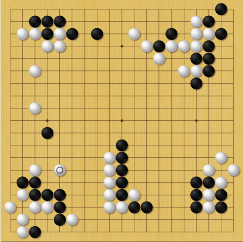 KataGo (B) vs LeelaZero (W)1
In order to programme a computer to play a reasonable game of Go - rather than merely a legal game - it is necessary to formalise the principles of good strategy, or to design a learning programme. The principles are more qualitative and mysterious than in chess, and depend more on judgment. So I think it will be even more difficult to programme a computer to play a reasonable game of Go than of chess.
- I J Good, 19652
There’s something magical about the game of Go. For thousands of years, it has captured the imagination of those who want to learn what it is to learn, to think about what thinking means.
With the recent advent of strong, open source Go AI that can beat top professionals, it’s worth tracing the history of the game, why it remained so difficult to beat humans for so long, and what the future of Go may hold.
Looked at in one way, everyone knows what intelligence is; looked at in another way, no one does.
Robert Sternberg, 2000
How we define AI has changed over time, older naive definitions were mostly concerned with capability on specific tasks, defining AI as
The science of making machines capable of performing tasks that would require intelligence if done by humans.
Minsky, 1968
Definitions like these are inherently unstable, because as we build these computer systems and become normalized to their (at first) astonishing capabilities, we stop thinking of their task performance as demonstrating any kind of intelligence. Definitions like these leave AI in a sort of God of the gaps situation.
Tying intelligence to performance in any single task, or even finite set of tasks, doesn’t seem consistent and informative. Some have proposed that intelligence is the ability to perform many tasks well, or the ability to solve tasks in a diverse range of environments3. Others claim that intelligence is the ability to acquire new skills through learning4. More recently there have been proposals5 that intelligence is a measure of skill acquisition efficiency. Given two agents with the same knowledge and fixed training time on a novel task, the more intelligent agent is the one that ends up with better skills.
The most popular AI system of the last century was Deep Blue, a chess playing system designed by researchers at IBM. The system consisted of a hand-crafted board evaluation function, a tree search to maximise expected board state value given an adversarial opponent, and custom hardware designed to accelerate those operations, achieving speeds of around 100 million position evaluations per second.
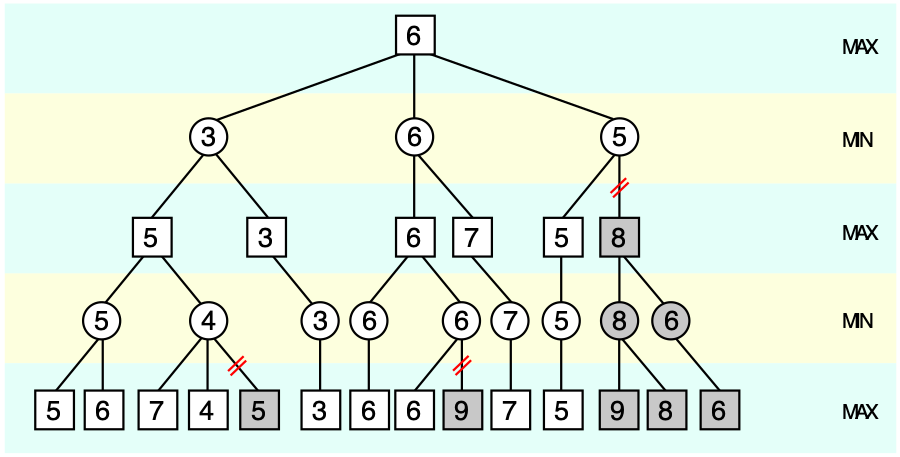 Alpha-beta pruning tree6
Value functions measure the “goodness” of states (read: how likely they are to lead to victory). Creating meaningful evaluation functions is no small task - indeed, the Deep Blue evaluation function consisted of 8000 hand coded heuristics7! Programmers got together with chess experts to assign value to various board states - rooks on the back rank, passed pawns, king safety, etc… All of these values were combined into a single number representing the total scalar “value” of that position, which tree search can then optimize for expected future value, given an opponent who attempts to minimize your value (minimax).
With a well-tuned value function and powerful tree search to read ahead and find a value-maximising trajectory, Deep Blue managed a win over Garry Kasparov, the world chess champion, in 19978.
Deep Blue is an example of an “expert system” - one which has human expert knowledge encoded into it. It did not learn from its play, or generate novel heuristics or understanding - it maximised board state value according to the human-defined value function.
Like chess, Go is a deterministic game of perfect information. There is no stochasticity, no hidden state.
Unlike chess in which there are on average around 35 legal moves to consider playing each turn, there are on average around 250 legal moves to consider in Go.
In tic-tac-toe, we can search the entire game tree, and easily find the optimal response for any position. xkcd nicely summarized this in an image:
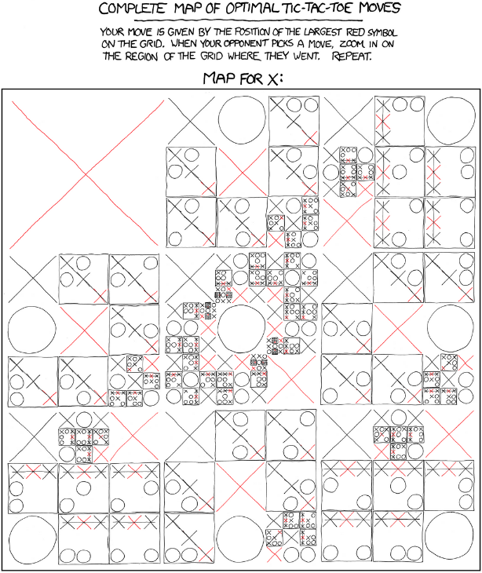 Perfect \(\times\) strategy9
Although it is in principle possible to create such a tree for Go since it is a finite game, the state space of Go is very large: the number of legal positions10 in Go is approximately \(2.1 \times 10^{170}\).
Since a game is a trajectory through legal board states (with some transition constraints), the number of possible games of Go is considerably larger. The number of unique games of Go has been bounded between \((10^{10^{104}},10^{10^{171}})\) 11 12.
Because the state space of Go is too large to be enumerated and searched through, players must learn to focus only on promising moves when considering possible game state trajectories (variations), in other words players must develop an intuitive sense of what moves might be good, and avoid wasting time on dubious possibilities. Defining such a value function turns out to be much more difficult for Go than for chess.
While intuition guides move selection, reading variations strengthens intuition using a form of self-argument: because Go is a zero sum game, move choice is necessarily conditioned on an adversarial opponent. Player’s goals are perfectly anti-aligned, so an optimal strategy can be constructed by considering maximising future state-value given a minimizing opponent (this logic is nicely encoded in the minimax algorithm).
Hand crafted value functions were not enough to solve Go, though. The search space is simply too large, and heuristics too difficult to define. One approach that saw some success was a modified tree search called Monte Carlo Tree Search (MCTS)13. MCTS randomly samples legal moves from the current position, and rolls out the game tree all the way to the end, each time using a random move. The value of the initial move is related to the proportion of rollout trajectories that result in a won terminal state. Somewhat surprisingly, Go bots using MCTS were able to reach advanced amateur level (low-mid dan) play!
There is something deeply interesting in the fact that defining state values by evaluating random rollouts to the end actually provides a meaningful approximation of “true value”. It seems tautological when spelled out, but truly “good” moves really do have a greater proportion of trajectories leading to victory, and random sampling is enough to approximate their value.
If the heuristics of board evaluation and move selection are so hard to program, so hard to even specify, how can humans play Go so well? Some experts can read many variations out very quickly, but nothing like the hundreds of millions per second of Deep Blue.
Human move selection intuition is excellent. At a glance, a very small number of moves stand out as worth considering. From the experience of many games of Go, we seem to be able to learn a sharp sense of which moves work, and which moves don’t. We also have the advantage of being able to read Go theory, which is the distilled experience of many others over millennia (incorporating symbolic knowledge into learning systems is an unsolved problem).
How can AI agents be given this excellent intuition? Convolutional neural networks!
Convolutional kernel (dark blue) applied to input (blue) to produce output (cyan)14
Briefly, convolutional neural networks are an example of a neural network that use only local connections which are particularly adept at learning about and processing spatially-correlated features in images. The GIF above shows a learned convolutional filter sliding around an image, producing a lower-dimension representation. Typical networks contain millions of such learned parameters, and can perform a wide variety of tasks in image processing.
As convolutional neural networks started to show promise in image recognition tasks15, and since neural networks can approximate any function16, people began thinking about using them to estimate the value function, treating the board state encoding as an “image” input to the CNN. The idea is straightforward: given some board state and final game result pair, \((s,r)\) train your CNN to predict \(r\) from \(s\). Even better, given the same state \(s\), estimate the next move.
And so people started downloading hundreds of thousands of games of Go played online by strong amateurs and training CNNs to predict moves and win-rates. Agents playing from raw move prediction alone could outperform some of the weaker Go bots, but still struggled against the MCTS bots. Combining CNNs for move selection (called the policy) and value estimation (probability of winning from current state), and incorporating MCTS with the estimated policies and values to select optimal moves (i.e. instead of randomly sampling moves, we weight the sampling by the policy priors from the CNN, and instead of rolling out to a terminal state, we estimate the value of the current state from the value network), these prototype CNN bots started to outperform all others, but professional humans were still out of reach.
Although MCTS improved the play of the trained CNNs, the networks were trained only on human games and had no means of improving beyond human knowledge. They could only weakly imitate humans.
To solve this problem, AlphaGo uses self-play and reinforcement learning to improve the policy and value estimations.
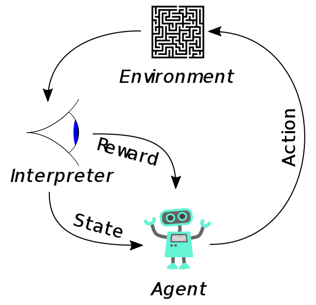
Broadly, reinforcement learning agents take actions in an environment, receive rewards and observations from their environment, and learn to adjust their actions to maximise future rewards. In this case, the “environment” is a simulated game of Go, and the reward is the final result of the game (i.e. the rewards are sparse, and only received after many actions are made).
Because the MCTS in AlphaGo optimizes for maximal value (which measures probability of winning), by producing and training on games of self-play, the network can be further trained to produce better value predictions, and importantly, the policy can be trained on the MCTS search values, that is, we can train the policy CNN to output the final move-transition values found by the MCTS during self-play. Using this system of producing games of self-play, and training on their policy and value results, AlphaGo was able to continually improve, and finally reach superhuman performance.
AlphaGo succeeded in beating world champion Lee Sedol, finally giving computers the edge over humans. But the team at DeepMind wanted to push the method further.
In addition to the raw board state, AlphaGo’s inputs included the following for every evaluation:
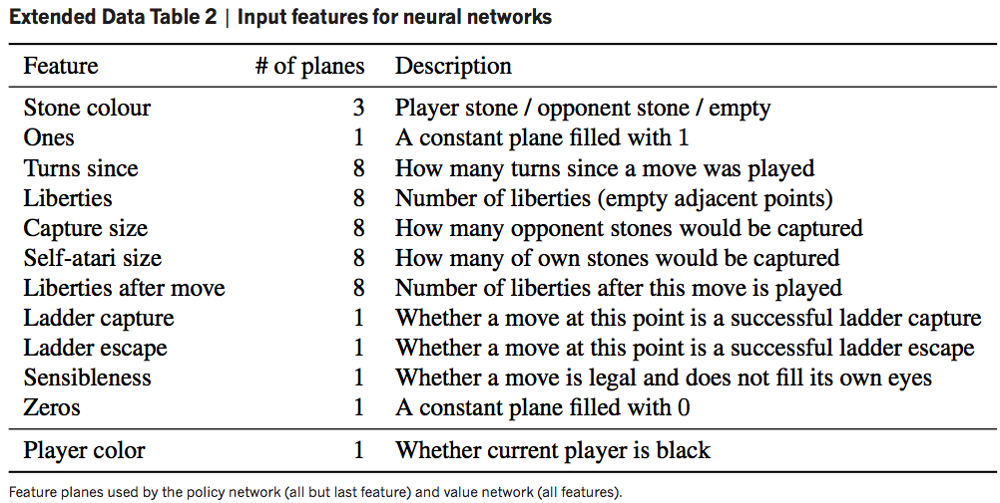 Feature planes of AlphaGo17
In a sense, there was still Go-specific knowledge that AlphaGo was “programmed with”, and the team wanted to see if a bot with zero game-specific knowledge could perform similarly.
In 2017 the team published the AlphaGo Zero paper18, with three primary improvements:
With these changes, AlphaGo Zero far surpassed AlphaGo’s performance, getting massive increases in training efficiency from the combined policy and value net, and from using a ResNet-like architecture19 instead of a fully convolutional network.
To measure relative playing strength of different agents, a commonly-used metric is Elo rating. While the full details of Elo rating (and how it corresponds to handicap stones) are beyond the scope of this article, briefly, Elo rating encodes relative probability of winning. Using the standard scales, for example, a 100 point rating difference encodes an expectation that the higher rated player has a 64% chance of beating their opponent; if the difference is 200, then the expectation is 76%.
There is a wonderful plot of Elo ratings of various bots from the AlphaGo Zero paper:
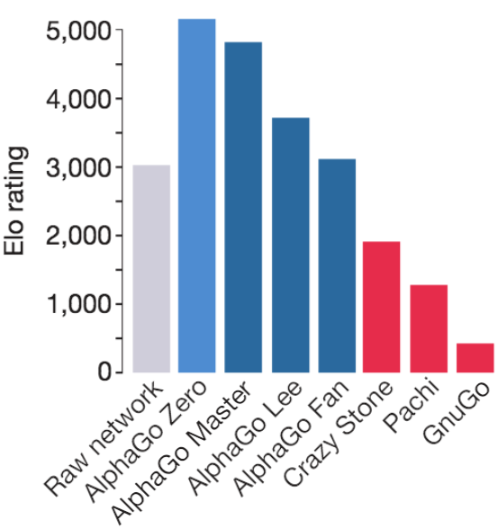 Elo comparison of various computer Go programs
Note that the raw network (just playing top move recommended by policy net) strength is around ~3000, while the full AlphaZero bot (using the policy network + MCTS + value network) achieves a rating > 5000. This gives us an idea of how much stronger the tree search and value estimation makes the raw network move intuition.
Going back to our earlier definition of intelligence as a measure of learning efficiency, it would have been excellent to see how the Elo strength as a function of self-play games changed from AlphaGo to AlphaGo Zero.
Finally the DeepMind team extended their AlphaGo Zero method to chess and shogi, removing all Go-specific aspects of the program (e.g. not generating additional training samples from the board’s \(D_4\) symmetry), and published again, calling it AlphaZero.
AlphaGo shook both the Go world and AI research community, but DeepMind largely left their work behind and moved on to other topics. With only the research papers to guide them, many started to re-implement AlphaZero.
As early as the first published paper on AlphaGo, many private companies, especially in China, S. Korea and Japan (where commercial Go products are viable) began to recreate AlphaGo/Zero. While these bots were helpful to those who could afford access, it wasn’t until open source bots became wide-spread that the Go community could fully take advantage their benefits.
The most well-known open source bot is Leela Zero, a faithful re implementation of AlphaZero, which uses crowdsourced GPU compute to produce games of self-play and train the network. Leela Zero has been training since late 2017, and has produced about 20 million games of self-play as of May 2020.
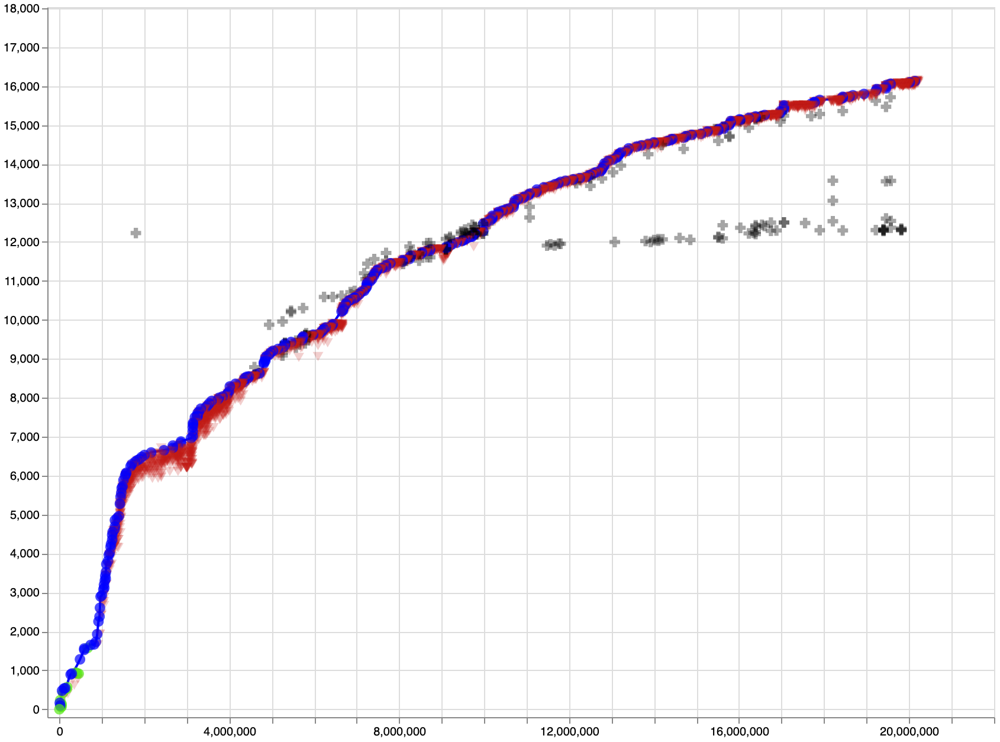 Leela Zero Elo rating vs. number of games of self-play20
As Leela Zero and other bots became available to the public for review and play, Go experienced a cultural shift unlike any that had come before. Suddenly everyone had access to superhuman playing advice, and could get opinions on variations in study from one of the strongest players of all time. While AlphaZero was a breakthrough for the AI community, Leela and the open source bots like it were the real godsend for the Go community. Rather than just mimicking AlphaZero’s moves, people could use them for in-depth review and study. World #1 Shin Jinseo reportedly brings an iPad with Leela Zero loaded up everywhere to review ideas and games. As AlphaZero and Leela Zero’s influence on the game meta took hold, researchers at Facebook noticed that players became stronger faster than anytime in history!
While a great resource to the Go community, these Zero bots still had problems: they were expensive to train, taking months or years to achieve super-human performance with “normal” amounts of compute, they were surprisingly bad at ladders (at first), inherited AlphaGo’s tendency to make slack moves when ahead, couldn’t play with variable komi, and played erratically in handicap games.
In a 2019 World AI Cup, Leela failed to podium, losing \(3^{rd}\) place to HanDol, a Korean bot which would later play Lee Sedol for his final game as a professional. Disappointingly, the commercial bots destroyed the #1 open source bot Leela, likely due to vastly greater compute resources for training at their disposal. It is unclear what algorithmic differences, if any, the commercial bots have vs AlphaGo.
“Godfather of AI”, co-inventor of convolutional neural networks and Turing laureate Yann LeCun wants to tell you about his cake.
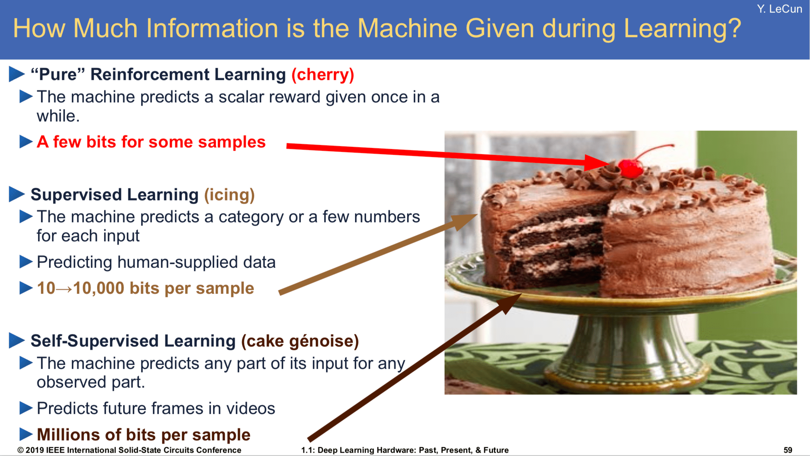 Slide from that one talk he’s always giving
If intelligence is a cake, the bulk of the cake is self-supervised learning, the icing on the cake is supervised learning, and the cherry on the cake is reinforcement learning
Yann’s point is that the bulk of information contained in things is “unstructured”. Reinforcement learning takes extremely low information density, e.g. a win-loss signal from a Go self-play game, and propagates that learning signal through many board states (e.g. training the value network to predict win rate from given board state). The signal-to-noise ratio there is not good, so reinforcement learning is extremely data-hungry.
Supervised learning is a little better: let’s say we want to build a CNN to classify images of dogs. Each training example contains a human-created label, which is much less noisy than a Go result, and is backpropagated through only the current image, a much stronger learning signal. Supervised learning generally requires fewer examples than reinforcement learning to achieve good performance.
Finally there’s what Yann calls “self-supervised” learning, in which “the system learns to predict part of its input from other parts of its input”21. The idea is that the unstructured input data contains far more information than any supervised labels ever could, and so finding ways to cleverly predict parts of the input results in much better learning signal and eventual learnt representations.
A fun recent example of successful self-supervised learning is monocular depth estimation22.
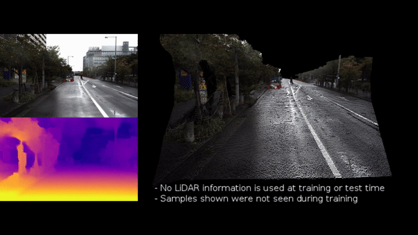 Monocular depth estimation23
It would be very useful to estimate pixel-accurate depth maps from monocular camera images[citation needed]. Humans cannot accurately label per-pixel depth maps, and LiDAR data is expensive to gather, so can we somehow get a network to estimate depth using only raw images as training samples?
It turns out, yes! By exploiting frame-to-frame consistent scene geometry and the fact that sequential video frames contain many of the same objects, we can have a network guess a depth and scene pose, use some geometry to transform that scene to another viewpoint, and back propagate pixel-wise photometric loss from the reconstructed and actual images to learn depth and pose accuracy. Using this method, networks can learn to predict accurate depth maps with only raw video input.
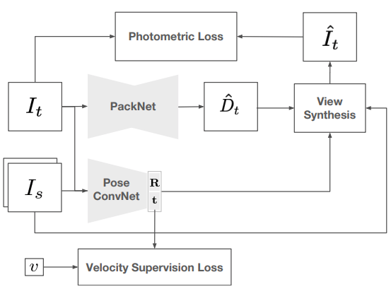 Self-supervised monocular network diagram24
In late 2017 lightvector began work on a Go project, an AlphaGo-style bot for personal experimentation. For those interested in the gritty details, I highly recommend people check out the original repository to follow along with his experimentation. The project evolved into a genuine research effort, and became KataGo.
Like AlphaGo, KataGo uses a CNN to estimate win rate (value) and move choice (policy), but it forgoes some of the Zero methodology of disincluding Go-specific information, instead including relevant features as input to the network, such as ladder and liberty status, amongst others. In particular, for \(b =\) board width, a \(b \times b \times 18\) tensor of:
| # Channels | Feature |
|---|---|
| 1 | Location is on board |
| 2 | Location has {own,opponent} stone |
| 3 | Location has stone with {1,2,3} liberties |
| 1 | Moving here illegal due to ko/superko |
| 5 | The last 5 move locations, one-hot |
| 3 | Ladderable stones {0,1,2} turns ago |
| 1 | Moving here catches opponent in ladder |
| 2 | Pass-alive area for {self,opponent} |
is passed as input to the CNN, along with an additional input vector of some global state properties including ko and komi details.
KataGo makes a number of seemingly small changes to the AlphaGo/Zero system that add up to huge efficiency gains in learning, and welcome usability improvements for the Go community.
Like AlphaGo, KataGo is trained from scratch via self-play reinforcement learning. There are four major improvements to learning efficiency:
Playout cap randomization:
As noted in the KataGo paper, there is a “tension between policy and value training […] the game outcome value target is highly data-limited, with only one noisy binary result per entire game”, while the optimal policy training would use around 800 MCTS playouts per move. In other words, the value net would like more games to be played more quickly, but the policy net would like MCTS during self-play to go deeper to get better policy targets, so the there is tension between these two goals due to limited compute. To solve this issue, during self-play KataGo occasionally performs a “full search” of 600 playouts for move selection, but mostly only uses 100 playouts to finish games more quickly. Only the “full search” moves are used to train the policy network, but because there are more game results, the value net has more training samples.
Forced playouts and policy target pruning:
There is a classic trade-off in reinforcement learning between exploration and exploitation: should you use the knowledge you’ve learned to take optimal actions, or should you explore seemingly non-optimal moves to discover new behavior? KataGo attempts to solve this issue with forced playouts, where each child of the root that has received any playouts receives a minimum number of playouts. For more details, read the paper.
Global pooling:
A relatively simple improvement is seen in KataGo by introducing occasional global pooling layers, so that the network can condition on board areas that may be out of reach of the perceptual radius of the convolutional layers. Experiments with KataGo showed that this greatly improves later stages of training, “as Go contains explicit nonlocal tactics (‘ko’), this is not surprising”.
Auxiliary policy targets:
I think this is the most interesting change in KataGo, which shares similar ideas with those from self-supervised learning: training additional policy targets. Typically AlphaZero style bots only predict move policies and board state values (via win rate). Taking the idea from LeCun’s slide that learning can be improved with the addition of more training targets, KataGo attempts to predict more game outcomes than just policy and value. In particular, KataGo also predicts final territory control, and final score difference. Quoting from the paper:
It might be surprising that these targets would continue to help beyond the earliest stages. We offer an intuition: consider the task of updating from a game primarily lost due to misjudging a particular region of the board. With only a final binary result, the neural net can only “guess” at what aspect of the board position caused the loss. By contrast, with an ownership target, the neural net receives direct feedback on which area of the board was mispredicted, with large errors and gradients localized to the mispredicted area. The neural net should therefore require fewer samples to perform the correct credit assignment and update correctly.
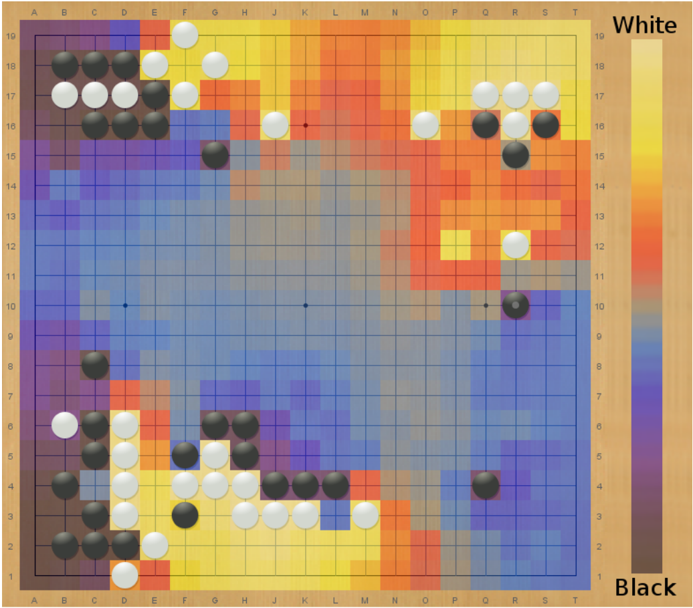 Visualization of ownership predictions by KataGo25
As a result of these improvements, KataGo massively outperforms Leela Zero and Facebook’s ELF bot in learning efficiency, with a factor of fifty improvement over ELF:
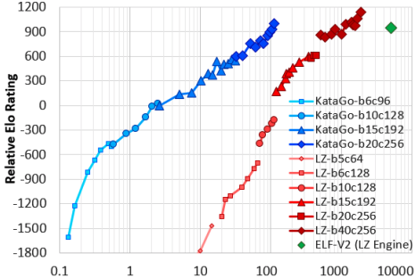 Relative Elo rating vs self-play cost in billions of equivalent 20 block x 256 channel queries (log scale)
In addition to these improvements, KataGo also directly optimizes for maximum score (with some caveats), mostly eliminating the slack moves found in other Zero style bots. KataGo also plays handicap games against weaker versions of itself during training, plays on multiple board sizes, and with variable komi and rulesets, so it is flexible under permutations of these game settings.
With all of these additional features, KataGo adds up to the most useful analysis tool yet made for Go, providing players with greater insight into the opinions of a superhuman Go agent.
KataGo is likely now the strongest open source Go bot available, recently topping the CGS rankings in all board sizes.
I highly recommend those interested check out the original KataGo paper - it’s an extremely accessible read.
In a recent interview, the lead researcher from AlphaGo, David Silver, said that he expects AlphaZero style bots to continue improving for the next 100 years, that the skill ceiling of Go still has not come close to being reached. KataGo provides a picture of how improvements will continue to be made, and how value for human players can be added along the way. Who knows, maybe next-generation Go bots will incorporate language models and be able to explain their move choices in natural language.
Will KataGo incorporate games played against external opponents? Self-play has worked wonders, but an even greater diversity of ideas can be found by learning from external opponents. Professional Go players used to say that even God couldn’t give them a four stone handicap. As KataGo inches towards that barrier with wins over professional players with three stones, how far will handicaps be pushed? Can an agent trained for optimal self-play learn the kinds of aggressive strategies needed to win the most difficult handicap games? Is learning an “optimal” strategy given the complexity of Go realistic? Will we need to incorporate learning opponent behaviour models to exploit their specific weaknesses?
The future of Go and AI is exciting. Though bots have overtaken humans in skill, they haven’t left us behind - as long as we can continue to learn how to play the game better, as long as we think about how to get our bots to think better, Go and AI will continue to flourish together.
KataGo vs. Leela Zero: B+Resign↩︎
Legg and Hutter: A Collection of Definitions of Intelligence↩︎
Jose Hernandez-Orallo: Evaluation in artificial intelligence: from task-oriented to ability-oriented measurement. Artificial Intelligence Review, pages 397–447, 2017↩︎
Lower bound: Walraet: A Googolplex of Go Games↩︎
Upper bound: Tromp and Farneback: Combinatorics of Go↩︎
Coulom: Efficient Selectivity and Backup Operators in Monte-Carlo Tree Search↩︎
Krizhevsky et al.: ImageNet Classification with Deep ConvolutionalNeural Networks↩︎
Silver et al: Mastering the game of Go with deep neural networks and tree search↩︎
Silver et al: Mastering the game of Go without human knowledge↩︎
Godard et al: Digging Into Self-Supervised Monocular Depth Estimation↩︎
Guizilini et al: 3D Packing for Self-Supervised Monocular Depth Estimation↩︎
Guizilini et al: 3D Packing for Self-Supervised Monocular Depth Estimation↩︎